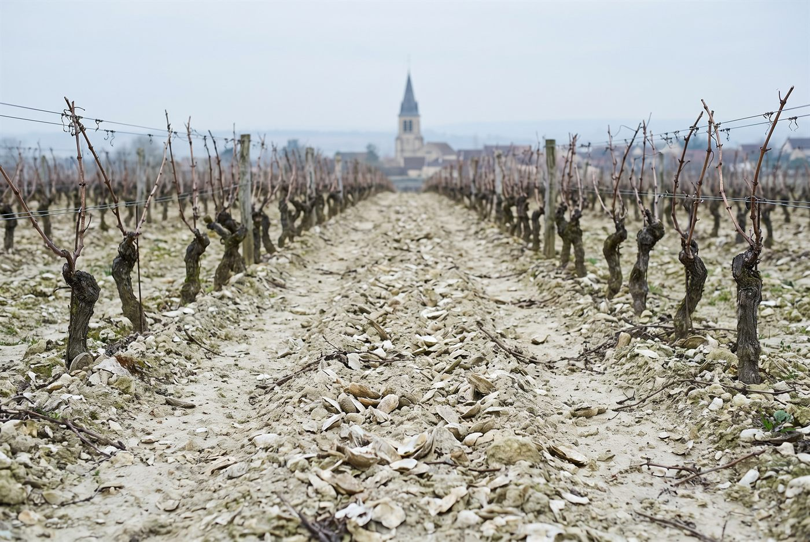

Les domaines · Chablis · Chablis
Chablis · Chablis
Domaine Jean Collet
Chablis de terroir, précis et minéraux, des grands crus Valmur et Les Clos aux premiers crus des deux rives.

Ambiance de Chablis
Fondé en 1954 par Jean Collet, héritier d'une lignée de vignerons chablisiens remontant à 1792, le domaine exploite aujourd'hui une quarantaine d'hectares sur les deux rives du Serein, du Petit Chablis aux grands crus Valmur et Les Clos. Romain Collet, petit-fils du fondateur, a pris la relève en 2008 et a engagé une large part du vignoble en agriculture biologique; les grands crus et plusieurs premiers crus sont désormais certifiés, le reste étant en conversion. Les cuvées les plus tendues sont élevées en cuve, les climats plus denses en fûts et foudres sans bois neuf.
Blancs
- Cépage · ChardonnayParcelle historique de la famille, réputée pour sa profondeur et sa tension.
- Cépage · ChardonnayPetite parcelle acquise plus récemment dans le climat le plus complet de Chablis, élevée sous bois.
- Cépage · ChardonnayRive droite, élevage en fûts sans bois neuf, cuvée dense et structurée.
- Cépage · ChardonnayRive gauche, élevage partiel en fût, style élégant avec davantage de chair.
- Cépage · ChardonnayRive gauche, élevé entièrement en cuve, profil droit et minéral.
- Cépage · ChardonnayRive gauche, vin structuré, riche et ample.
- Cépage · ChardonnayRive gauche, parmi les premiers crus du domaine conduits en agriculture biologique.
- Cépage · ChardonnayRive droite, élevage sous bois.
- Cépage · ChardonnayVin généreux et direct, notes épicées et iodées portées par une acidité minérale.
- Cépage · ChardonnayÉlevé en cuve inox pour préserver la fraîcheur.
Ces cuvées vous parlent ?
Demander les disponibilités